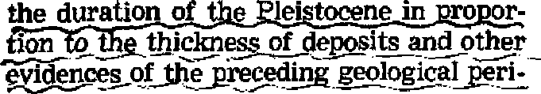

EARTH’S PAST -CALM OR CATACLYSMIC? Evolutionary science or the Bible—Which?
"Released Time” for Religious Instruction? eourt approves, but many fear consequences
More or Less About Bathing Suits
Can the swimsuit’s fading frontier possibly recede any farther?
A Tour Through Inca-Land
Romance and tragedy echo from Inca ruins
ATTCtTTST* R 1Q5Q v
THE MISSION OF THIS JOURNAL
News source* that are able to keep you awake to the vital ifcsuea of our times must be unfettered by censorship and selfish Interests. “Awake 1” has no fetters. It recognize* facts, faces facts, is free io publish facts. It is not bound by political ambitions or obligations; it is unhampered by advertisers whose toes must not be trodden on; it is unprejudiced py traditional creeds. This Journal keeps itself free that it may speak freely to you, But it does not abuse its freedom. It maintains integrity to truth.
‘'Awake I” uses the regular news channels, but is not dependent on them. Its own correspondents are on all continents, in scores of nations. From the four comers of the earth their uncensored, on-the-scenes reports come io you through these columns. Thjj journal's viewpoint is not narrow, but is international. It is read In many nations, in many languages, by persons of all ages. Through its pages many fields of knowledge paw in review—government, commerce, religion, history, geography, science, social conditions, natural wonders—why, its coverage is as broad as the earth and as high as the heavens.
“Awake 1” pledges itself to righteous principles, to exposing hidden foes and subtle dangers, to championing freedom for all, to comforting mourners and strengthening thos^ disheartened by the failures of a delinquent world, refl eating sure hope for the establishment of a righteous New World.
Get acquainted with “Awake I” Keep awake by reading "Awakef*
PUBLISHED REM I MONTHLY BY
,,A. UTOWEH BIBLE AND TRACT SOCIETY, INC.
117 Adama Street N, H, Knohh, President Printing this Issue: 976,000 LaiiiaiD In whick tfcl* nifiuint h pUllthH: Semimonthly—Afrikaans, English, Finnish, French, German, HoilMd&L Norwegian, Spanish. Swedish, Monthly—Danish, Greek, Portaguest. Ukrainian.
Ofllees Yearly rtibseriptiou Bate
Arnarka, U.S,,117 Adams St., Brooklyn 1, N.V. (1 Aurtralli, 11 Beresford RA., Strath field, N.8.W. Bs Canitfl, 40 Irwin Are., Toronto E, Ontario SI EdiIirA 34 Craven Terrace, Loudon, ff, 2 Is Stith Afrlct, Print* Bm, P.O. Elandjfonleln, Tr&nmuil 7s
Brooklyn 1, N. X., TL S. A. Grant Suites, Seonrtory
Five cents a copy
Rimittmim ibould he tent to Office in your country in compliance with regitlatlom to guarantee atfa delivery of money, Remittances are accepted at Brooklyn from coimtnes where no office Is tented, by international money order only. Subscription rates in different countrlea are ben stated In local currency. Kotla «f expiration (with renewal blank) It tent at least two iMiift! before iutmcrlpdon expires. Change »f address when sent to our office may bo expected effective within <ne month. Bend your old ae well as new address.
Entered as Mcowd-clua hi a tier at Brooklyn, N, T Art pf March 3, 1879. Printed Jn U, 6, A
CONTENTS
* ‘Rele ased Time ” for Religious Ins truction ? 5
Latest Example of U. S< Supreme
More or Less About Bathing Suits
p i-i m st «
Earth’s Past—Calm or Cataclysmic? 17
Creeping or Sudden Catastrophes?
Tragedies in the Animal Kingdom A Mammoth Misrepresentation
Prophecy—Out on the Limb of the Future "Your Word Is Truth"
“Giving Thanks Always for All Things” 25 Jehovah’s Witnesses Preach in All
the Earth—the Philippine Republic 27
Watching the World 29
Volume XXXIII BrQpklytl, N. Y.? August 8, 1&5a ~ Number 15
Free Speech—for Ministers Too
WHEN law ceases to protect law-abiding citizens it is either a bad law or it has fallen into bad hands. The ancient psalmist warned of God-defying men in places of authority who would even seek to stifle the preached Word of God behind the pious cloak of law, even claiming the blessing of God while doing so. He asked: “Can evil rulers have thee for an ally, who work us injury by law, who make an onset upon honest men, and doom the innocent to death?” (Psalm 94:20, 21, Moffatt) Vicious conspirators with law carried the principle to the highest extreme in framing the Son of God thereby. Afterward they haled into court his intimate followers and sought to still their preaching that was “upon the basis of Jesus’ name”; but were told by these fighters for liberty, “We must obey God as ruler rather than men.” (Matthew 26:59-66; Acts 5:40, 29, New World Trans,) In modem times totalitarian states have drenched carefully schemed laws with Christian blood. But, worst of all, in even democratic, Christianity-professing United States, the same principle, though to less violent ends, has been leveled against Christian activity.
More than twenty years ago in Green River, Wyoming, there was bom a law designed ostensibly to control house-to-house peddlers. Shamefully, numerous municipalities throughout the land have since fashioned similar ordinances, outlawing uninvited door-to-door callers, and then aimed them against itinerant ministers of the gospel. In the ensuing fight for civil rights the Christian minority, Jehovah’s witnesses, came to' the fore as champions of the right to speak in the apostolic manner, “publicly and from house to house,” without asking for the privilege. In the words of Paul the apostle they rose in courts all over the country to say: “We are not peddlers of the word of God.” (Acts 20:20; 2 Corinthians 2:17, New World Trans,) This fight interested more and more of the watching populace as the fact became clear that the rights of all were intertwined with the rights of these few. The pace quickened when two of Jehovah’s witnesses, Elsie McCready and Lillian Lawson of Denver, Colorado, were arrested on such “Green River” basis in Cheyenne, Wyoming, and it appeared that a showdown fight would follow in the ordinance’s home state. Arrest occurred while these ministers were attending a circuit assembly of Jehovah’s witnesses in June, 1951; and convictions in the Cheyenne Police Court were appealed to the District Court in November.
The defendants, although not previously invited by the householders to call, contended with the apartment house owner and the police, who demanded that they stop preaching, that they were not subject to the ordinance because ministers are not solicitors or peddlers. Notwithstanding their remonstration they were arrested and prosecuted. Stipulation was made that Cheyenne’s Green River ordinance was not enforced to halt unsolicited calls by the Community Chest, Red Cross, other local charities and clergymen who called at doors of the general public or their parishioners without prior invitation.
The prosecution appealed in questionable logic to the fact that the ordinance’s long endurance proves its worth. Cheyenne’s city attorney alleged that the defendants’ asking for contributions in return for literature brought them under the terms of commercialism stipulated by the ordinance, However, he failed completely to establish a case and Judge Thompson rendered a swift judgment favoring freedom of speech—for ministers too—after which he added an opinion from which the following is quoted:
“This is a Christian organization and fortunately in this Country we have most of these organizations that attempt to deal with spiritual questions are Christian organizations and this is one branch of Christian work. . . . There is a Green River ordinance but it is the impression of this Court, its viewpoint as a matter of public policy that the greatest freedom possible under the law should be extended to religious organizations. . . .
“I am inclined now to say that in the opinion of this Court that this ordinance ought to be interpreted rather as a commercial activity controlling ordinance rather than a religious activity controlling ordinance. If we interpret it as a religious controlling ordinance, . . . then we are going to run right into these Constitutional provisions that have been mentioned. . . .
“But I think it is very important that perhaps some activity of this kind be permitted. . . . Why? Because I feel that from the mouths of babes truth may come and
I listened. And this activity here while it is annoying, takes people’s time, keeps them away from the people on the radio or conversation with a neighbor who has come in and talking about some mutual interest yet I believe in view of the importance of spiritual understanding maybe it is a good thing that we do not curtail this kind of activity.”
This opinion reflects good judicial sense and, more important, a,proper respect for true godliness and Christian worship. It is certainly a much wiser position than that expressed by the Sunday issue, November 25, 1951, of the Rock Springs (Wyoming) Rocket-Miner,namely: “There are many who believe that this religious organization has been chosen to carry the ball for more powerful commercial interests, It is believed that attempts may be made to have the results of these preliminary cases used as precedents in having the law declared unconstitutional and thereby paving the way for large-scale house-to-house selling, soliciting, and peddling.”
Rightly, some of Jehovah’s witnesses locally sent to the paper a letter which was published and which flatly denied this charge. The letter called attention to the Christian, charitable purposes for which the Watch Tower Bible and Tract Society is incorporated, to preach the gospel of God’s kingdom under Christ Jesus. Respecting treatment of those spreading this gospel, Judge Thompson’s course reflects the wisdom of the first-century legal mind, Gamaliel, who said of the apostles of Christ: “Do not meddle with these men, but let them alone; (because, if this scheme and this work is from men, it will be overthrown; but if it is from God, you will not be able to overthrow them;) otherwise, you may perhaps be found fighters actually against God.”—Acts 5:38,39, New World Trans.
Religious /
illiteracy U/ -------
characterizes i FW V;
I I y I _rJ-^J
American youth. Accord- \ ing to the president of \ x Wellesley College, girls \ \ r*j who enter Wellesley are 6
by and large “essentially ^-^2 ignorant of the history and literature of the religious tradition to which they claim allegiance'’. And commenting on the foregoing Harry Emerson Fosdtck, one of America’s foremost clergymen, states: “Concern about this matter, especially in regard to our public schools, has been mounting rapidly.”
In an effort to combat this religious illiteracy many well-meaning persons advocate that children be released during the regular public school hours to take religious instruction, a plan which had its beginning back in 1913-1914. At present its advocates claim that about 3,000 communities in the United States have such a plan in operation, affecting some three million school children in 46 out of 48 states. Also that upward of 25 cities with populations above 250,000 make use of the released-time provision.
Unequivocally for the plan is the Roman Catholic Church. Opposed to it is American Jewry, the American Civil Liberties Union, Ethical Culture Societies, etc. Divided on the justice and wisdom of the plan are Protestants, educators and state courts.
The New York State court ruled in 1925 that such a plan violated the Constitution. However, two years later that verdict was overruled. Since then on nine different occasions this matter has been brought before it, and each time it has ruled in favor
\ \ of released time. Just a few rj \ i years ago the Circuit Court |J । of Missouri ruled the oppo-_ / / site; that released time was &/ / a violation of the constitu-z / tional principle of separa-/ tion of church and state. In
1948 the Supreme Court of the United States ruled, in JfcCoftum v. Board of Education, that the Constitution forbade the practice of releasing school children for the taking of religious instruction within the school building.
Arguments Pro and Con
Arguing for released time the Catholic Digest^ May, 1950, stated: “Released-time advocates say the child is under his parents' control 24 hours a day, whether he is at home, at church or at school.” In the denial of released time it sees an attempt to undermine the authority of the home, E. S. Greenbaum, in The Nation^ February 9, 1952, argues for “the parent’s right to choose”. To forbid released time “would prevent parents from fully exercising their rights to give their children religious instruction in the faith of their choosing*'. He claims that teachers should excuse children for religious instruction just as they do for music lessons or for religious holidays.
The February 1951 issue of Education featured religious education and in “The Case for Released Time” argued that Church and State “must co-operate on behalf of the children” and khat “if parents have the right to send their children to private or parochial schools for full time, they certainly have the right to send them for one hour a week”.
But is the child under the parent’s control 24 hours each day? Not at all. The state demands that the child receive atn elementary education in the “three R’s”, etc., and no parent may exercise control of his child in such a way as to deny its child such an education. The state decides what the child must learn five hours each day, for five days a week during the school term, and unless matters of conscience are involved the parent may not interfere. And since 'religion is wholly exempt from cognizance by Civil Society’, according to James Madison, it is difficult to see how church and state can co-operate in teaching religion to children.
True, parents have the right to send their children to private or parochial schools if they so wish, but they have no right to demand that the state’s public and secular schools co-operate with them in teaching religion to their children. The state is not denying the parents the right to teach religion to their children; it merely states that it will not co-operate therewith and that during school hours. The state is not concerned with whether a child gets religious training. That is the business of the parent and the church. If it were to assume that responsibility it would have to decide which religion, decide the standard of the teachers of religion. Could it do that properly for all religions? Could it do it without doing injustice to some? Of course not!
Releasing children from public schools to take religious training is boring a hole or making a door in the wall of separation between church and state. It is a case of the church enlisting the powers of the state for its own ends. The state can compel children to go to secular and public schools; but it cannot teach religion nor compel children to study religion. The church, on the other hand, can teach religion but it is wholly without power to compel anyone to study it Clearly it was the purpose of the founding fathers of the United States to keep compulsion and religion separated; to do otherwise would bring two great evils upon the people, that of inflicting injustice on some of the people and that of abetting hypocrisy. By releasing children from public school, where they are compelled to go, on the condition that they take religious training elsewhere, is utilizing the compulsive powers of the state, intended solely for secular and general ends, for special and religious purposes. Such is clearly a violation of the principle of the Constitution.
The Basic Question
The mere question of whether the religious instruction is held on school property is thus seen to have no bearing on the matter—the position taken by the Circuit Court of Missouri: “The differences are inconsequential. The controlling fact in both cases is that the public schools are used to aid sectarian groups to disseminate their doctrines. Whether these sectarian classes are conducted in school buildings or elsewhere can make no difference, since attendance upon them during compulsory school hours is deemed attendance at school. Failure to exercise supervision over the instruction of religion and to require the proper attendance records does not make the program legal; it merely indicates laxity on the part of the school authorities. The fact that any sect may participate in this program is immaterial; the public school cannot be used to aid one religion, to aid all religions.”
The mere fact that religious education is denied during school hours is not an injustice nor does it work hardship upon the children. The government dictates the hours and what may or may not be taught, since it pays the bills. Such is right so long as no questions of conscience are involved.
In this matter of released time it is not a matter of conscience or principle but solely of convenience. All the state asks is for 11 per cent of the child’s time to give it secular education. Surely in the 89 per cent left the church and parent can find one-half of one per cent of time, or one hour weekly, for religious instruction. Educators opposed to the released-time provision point out that while subjects raught in schools have doubled and trebled, in recent years, not one minute has been added to school time.
That the crux of the whole matter is the use of the power of compulsion of the public school, that is, of the state, to force religious education on children is apparent from the fact that the advocates of released time are unwilling to consent to dismissed time, that is, of having the entire school let out one hour earlier so that those who wish may have religious instruction while others are free to go elsewhere. No, that would not suit'the released-time advocates, for they well know that the question is not just one of time, or else they would find one hour in the remaining 143 hours each week to give the children religious instruction. They know that were they to agree to dismissed time very few children would find their way to the places where religious instruction is being offered.
Disadvantages of the Plan
The basic principle of the Constitution as applied in this matter is just. It avoids working an injustice to those who do not wish to avail themselves of religious instruction, or are unable to do so because of lack of facilities, as would be the case in very small sects. That the plan does bring with it injustices is seen from the following examples.
In Chicago, where less than 10 per cent of the children are enrolled for released-time Instruction, principals and teachers have been instructed that “nothing significant shall be taught children not taking religious instruction so that those taking it shall not be penalized for their absence”. Apparently our religious released-time advocates are so determined to have their own way that they are willing to waste one hour of 90 per cent of the class just so one hour of instruction in religion will be given to the 10 per cent of the children availing themselves of their arrangement. In New York it is estimated that 25 per cent are enrolled.
That released time does interfere with the studies of those who do not accept it has been recognized in more places than one where it was tried. In Harrisburg, Pennsylvania, the board of education observed that “in order to meet this problem there must be curtailment of activities in the school which are often the actual character-building agencies of the school itself”. After three years’ trial it discontinued released time because it “neither met the needs of religious education nor justified the effect upon the public school program”.
Rejecting the plan, the San Diego, California, Board of Education issued a report, which, among other things, stated: “8. The year’s trial of ‘Released time for religious education’ has demonstrated that the program interferes with the progress of school work during the entire day, increases the work of principals and teachers, and results in certain confusion and loss of time to all children in the grade, both those who are released and those who remain. The evidence does not show growth of character or desirable behavior beyond that of the children who did not participate in released-time program. The results do not justify a continuation or extension of the plan.”
On three different occasions, the Public Education Association of New York conducted a study of the released-time setup since the plan was put into operation some ten years ago, and as a result it has consistently opposed released time. Among the weaknesses it noted were truancy increase, exertion of pressure on the part of schoolteachers to have children participate, and waste of time of both children and teachers, All of which, incidentally, clearly demonstrates that released time for religious instruction cannot be placed in the same category as the excusal of an occasional pupil for music or dancing lessons or for religious holidays such as Good Friday or Yom Kippur.
Latest Example of
S. Supreme CourVs Inconsistency
In the Everson case the Supreme Court ruled that New Jersey's law, which provided free use of public school buses for pupils attending Catholic schools, but defiled such use to school children attending all other private or parochial schools, did not violate the principle of separation of church and state. In the McCollum case it held that to hold religious classes in public schools and to use the state’s compulsory school machinery to provide classes for religious instruction by sectarian groups was in violation of that principle. In March 1952 it claimed to see no constitutional question involved in the daily reading from the Bible as practiced in New Jersey's public schools. And on April 28, 1952, it approved of the New York State’s released-time program on the basis of the fact that the classes were not held in school buildings; entirely overlooking or choosing to ignore the fact, however, that the state’s compulsory school machinery was being used to provide such classes with pupils, a thing which it expressly condemned as incompatible with the principle of separation of church and state in the McCoUum case.
Endeavoring to gloss over this inconsistency the majority opinion (6-3) stressed that '‘we are a religious people”, and pointed to prayers in legislative halls, reference to God in courts, Thanksgiving Day proclamations, etc. It held that the question was a matter of degree and that the First Amendment “does not say that in every and all respects there shall be separation of church and state”; and that the state “can close its doors or suspend its operations as to those who want to repair to their religious sanctuary for worship or instruction”, for “we cannot read into the Bill of Rights a philosophy hostile to religion”.
The three dissenting opinions had, however, by far the better of the argument. Justice Black pointed out that the use of the state’s compulsory school machinery, which the McCollum opinion denied to sectarian groups, is "exactly what the court [now] holds New York can do”. “It is only by wholly isolating the state from the religious sphere and compelling it to be completely neutral, that the freedom of each and every denomination and of all nonbelievers can be maintained.” “State help to religion injects poHtical and party prejudices into a holy field. It too often substitutes force for prayer, hate for love, persecution for persuasion.”
And Justice Jackson, in his dissent, among other things stated: “Here schooling is more or less suspended during ’released time’ so that nonreligious attenders will not forge ahead of the churchgoing absentees. But it serves as a temporary jail for a pupil who will not go to church.” “It is possible to hold a faith with enough confidence to believe that what should be rendered to God does not need to be decided and collected by Caesar. We start down a rough road when we begin to mix compulsory public education with compulsory Godliness.”
Justice Frankfurter emphasized his concurring with Jackson's dissent by adding such observations as the following: “The court relies upon the absence from the record of evidence of coercion in the operation of the system . . . but the court disregards the fact that . . . the petitioners were not allowed to make proof of it. . . . Petitioners sought an opportunity to adduce evidence in support of these allegations at an appropriate trial.... When constitutional issues turn on facts, it is a strange procedure indeed not to permit the facts to be established,” The fact that release^-time advocates would not agree to closing the schools entirely, he opined, "betrays a surprising want of confidence in the inherent power of the variqus faiths to draw children tu outside sectarian classes.**
In view of the foregoing it is apparent that the released-time program has neither logic, nor facts, nor the Constitution to support it, the Supreme Court of the United States to the contrary notwithstanding. Actually the program is an admission that the churches and the parents have failed in their efforts to teach the children religion during the 89 per cent of the time that the children are not in the public schools, and therefore they are resorting to a crutch. If the sectarian groups clamoring for released time would teach what the Bible has to say regarding parental responsibility they would not have any occasion to resort to that crutch.—Deuteronomy 6:6,7.
Tour Through incn-LHnD
By '‘Awake!" correspondent in Porn
ANY Peruvians will solemnly tell you that the first Inca, Manco Capac, with his sister-wife,
Mama Cello, arrived from extra-mundane regions on the Island of the Sun, in the midst of Lake Titicaca. Hence, the lake had great sanctity, and on the island of their origin there was later built a temple of great beauty. They and their offspring founded the Inca dynasty and built ah empire.
History, however, has it that the first Inca was chieftain of the Quechua tribe of Indians that ruled over Cuzco about A.D. 1200. He was worshiped as the Son of the Sun. About 100 years before the arrival of conquistador Pizarro the ninth Inca had extended his empire as far north as Ecua-
Only legend
and supposition speak of
this mighty empire, for there was no written language, not even hieroglyphics, as a dependable source of information. Their system of communication was by knotted cords made of llama or alpaca wool, dyed in varying colors, the significance of which was known to the magistrates. This quipu was knotted in such a way as to represent the decimal system and was fastened at close intervals along the principal strand. Thus messages regarding crops, taxes col-
dor and south to Argentina.
lected, or the advance of an enemy could
be spelled out by trained runners. Interpretations of the guipu as well ns the history depend on the memory or imagination of those interviewed by the first Spanish chroniclers and there exists much ambiguity with respect to dates and events.
Huayna Capac, the last unconquered Inca, died in December of 1527, and his illegitimate son, Atahualpa, set himself up as Inca, aided and abetted by the army in Quito, Ecuador. In Cuzco the legal son, Inti Cusi Hualpa, or better known as simply Huascar, became Inca. The four years of civil war that followed resulted in triumph for Atahualpa, but he had only a year to enjoy his victory as he basked at the delightful hot springs of Cajamarca. On September 24,1532, he was invited to visit Pizarro, but on arriving as honored guest of the Spaniards, his troops were hewed down by well-equipped soldiers, and Atahualpa was seized and imprisoned. Recognizing the enemy’s thirst for treasure, Atahualpa offered to fill his prison room with riches in exchange for his release, a bargain that was readily accepted by Pizarro. The royal command went forth. Gold and jewels poured in, even gold-encrusted walls of sacred temples being stripped to meet the demand. The room was gorged with treasure, but it only served to show Pizarro the power and therefore the danger of this empire to his own fond dreams of domination. On a trumped-up petty charge, Atahualpa was condemned and executed in the public plaza of Cajamarca. Thus Cuzco, once holy city of the Incas, became subjected to the plundering, conquering Spaniards.
Skilled Stone Masons
The Incas were skilled as stone masons. The buildings of the second Inca period were patterned by absolutely symmetrical stones with smooth polished surfaces joined with such uncanny precision that a penknife cannot be inserted between them. Cuzco’s museums are enthralling. Outstanding among the exhibits are the mummies, their positions of burial being similar to that before birth, elbows resting on knees. Many of these mummies show evidence of scalp operations where a silver plate replaced the part removed. Also the surgical instruments used to perform such delicate operations are on display. Some years ago, in this same city of Cuzco, an American surgeon performed a successful operation with these same instruments, highly commending their flexibility and adaptability. To think that these surgical instruments were used during the thirteenth to the fifteenth century!
The Inca fortress of Sacsahuaman, meaning, in the Quechua tongue, “Falcon Rock,” is truly a renowned fortress, which rises in stony majesty over the city, and evokes the most extravagant adjectives as its ruins stand in broken, yet arrogant grandeur, How its creators came by the science of such military fortification, with what tools they cut out such gigantic stones, and especially by what means they dragged them to the desired position, are questions that still plead for an answer. The “Falcon Rock*’ is a combination fortress and palace with three tiers of zigzag construction that leave one gasping to examine soiree of those monoliths, which are said to weigh as much as 130 tons apiece. Whether it is Inca or pre-Inca is still a subject of debate among archaeologists and historians, but a definitely undebatable fact is the foresight of those Incas in their choice of the most advantageous positions for their fortresses, and this bears mute testimony to a lost culture and civilization.
Not far is La Piedra Cansada, or “Tired Stone”. This stone is said to weigh over 1,000 tons and was to have been part of the main wall of the fortress, but in the process of orientation 300 workers were crushed to death by it. After that it was [eft strictly alone. The fortress was built by 25,000 men during a period of fifty years. It was garrisoned by the Spaniards in 1533, taken by the armies of Inca Manco in the Indian uprising in 1535, and recaptured soon after by the Spaniards, who afterward maintained a garrison there through the sixteenth century.
Peculiar to Inca-land are the herds of llamas, quaint animals very aptly described by one writer as “miniature, incorrectly-designed camels”. They seem to be disdainful of everything in general and nothing in particular. Natives contend that llamas will stubbornly refuse to accept a load of more than fifty kilos, or 113 pounds, and if forced to do so, they sit down or spit at their would-be oppressors. They are very profitable animals, not only for their wool and burden-bearing capacity, but also because they eat so little and can go as long as five days without water. Their droppings are used for fuel, firewood being very expensive. One should not speak disparagingly of so worthy a creature.
In 1911 and 1912 Hiram Bingham, famous archaeologist and Yale University professor, discovered and unearthed the “Lost City of the Incas”, situated on top of towering Macchupicchu, which means “Old Peak”. The scenery here is breathtaking. Rio de Janeiro has only one jagged peak. Macchupicchu has half a dozen rising out of the midst of overpowering natural beauty. The yawning gorge below is said to equal the Grand Canyon. The mist plays queer tricks with the mountains, first becoming a beautiful frame and then wrapping the whole scene in swaddling clothes.
Little is known of the history of this stone city, but the evidence of its past grandeur bespeaks an unusual people with a vast knowledge of architecture, agriculture, and engineering. With stone implements an important city was carved and quarried out of a granite mountaintop, surrounded by scores of terraced gardens, and water was channeled into this almost impregnable citadel. A labyrinth of roofless white buildings of smooth polished stones perfectly joined together blends in silent harmony with the mountains.
The stone city had quarters for the military and the intellectuals, for the religious and the workers. The residence of the nobility, the apartment of the princesses, was built with stone staircases leading to the Priest’s Divan and the King’s tomb. Farther on is the city prison and a special place of punishment for erring women, cunningly contrived to break the neck. From the solar observatory, at the very top of the ruins, one can see a panorama of natural grandeur that begs description, mountains piled on mountains, steep crags and perpendicular cliffs with drops of thousands of feet to the gorge below, and wild orchids of indescribable colors vying for attention. Here, too, is the Reloj del Sol, an immense sundial carved out of a single huge stone.
System of Government
The Incas had a wonderful system. The head of each family was given a piece of land for cultivation and for each son bom an additional plot, but for a daughter, a plot only half the size. Upon the death of the owner the land was returned to the community. Most interesting is the fact that Inca rule required that all the land be returned for redistribution at the end of every fifty years, so that none could lord it over his neighbor. The three major crimes were laziness, lying and theft. These called for the death penalty. Rigid, but generous, were the laws that governed the subjects of the Inca empire which once embraced fourteen million people. Their system of marriage afforded little opportunity for love matches. On a set day in the year a festival was proclaimed and all youths who had reached their majority of twenty-four years were lined up opposite the maidens of eighteen years in the main plaza of the city. The Inca himself walked through the file and, grabbing at random the hand of a male prospect, joined it to that of the nearest female. This simple ceremony granted them all the rights of matrimony. There was a similar ceremony performed by the cacique, or chief of the tribe, on behalf .of those of lower rank, the Inca personally caring only for those of the nobility.
At the time of the harvest the Inca himself began the work as an example to his subjects. All of this reminds one of Jehovah’s Jubilee system that operated in Israel under theocratic government Then a glorious fiftieth year of redistribution, restoration and plenty crowned their efforts. Today God’s glorious theocracy and its nearness are discussed in Inca-land, perhaps for the first time. The people are told that in the new world without end there will be no Spanish invaders, no thirst for gold, nor inglorious execution to satiate such thirst, but instead “they shall sit every man under his vine and under his fig tree; and none shall make them afraid”. (Micah 4:4) Legend and mystery will yield to truth and reality. As one views this dead city in a setting of living beauty, a prayer of gratitude is offered to Jehovah that the "mountain of the Lord’s house” is now being established on the top of the mountains, and that people of all nations are seeking refuge therein.
Pope Demands Bible Study
THE following appeared in the morning edi- / tlon of KJ Comercio, the leading newspaper of Peru, on April 11, 1952: \
Pope Pius XII Demanded Assiduous Study I; of the Bible /
*3 id that the eternal truths that It contains will ’■ give tight to the mind and warmth to the heart
Vatican City, 10, (AJ>.)—Pope Pius XII J. said that there was a constant need of study- \ Ing the Bible in order that “the eternal truths ? contained in It may illuminate and warm the / minds and hearts of men”. The pope spoke > before a group of forty members of the So- > ciety of Old Testament Studies, of Great Britain, who were received by the High Pontiff In < a special audience. Said group, comprised of / Protestants and Roman Catholics, has just '■ completed a series of conferences and studies \ in the Institute of the Pontifical Library in <' 11
Rome. <'
The pope commented that the studies carried out by said religious group had concluded ; on a day—Holy Thursday—consecrated to the '3 memory of Him “whose holy person occupies =■ all the pages of the Bible”. Today is the anni- <* versaly of the institution of the Holy Eucha- t' rist, made by Christ at the last supper. The pope said: “The garden of Saint Chrysostom is beautiful, but even more beautiful is the study of the Holy Scripture. In the meadows we And flowers, but these rapidly wither; tn the Holy Scripture we find words that will endure forever. The reading of the Holy Scripture provides the soul with advantages that have an eternal value.” But those spiritual advantages, said the pope, “will be genuine and solid in proportion to the certain and exact knowledge of what the holy author has said.” The high pontiff added: "hence the constant need of devout students, who with an untiring eagerness to make a wise and judicious use of the vast mechanism of the Biblical teachings related to philosophy, geography, archaeological history, textual criticism, and natural sciences, may succeed in making the eternal truths shine with all their splendor to illuminate the minds and the hearts of men.” Then the pope said: “When men have searched and found peace with God, they will also And the way to enjoy true peace among the nations.”
IT SEEMS improbable that the bathing suit will get larger and impossible for it to get smaller. What will next year’s styles be? Expert designers predict changes. Manufacturers reserve comment. They are careful not to predict which way the swimming suit is going.
The modem bathing suit had its start some forty-three years ago, when Annette Kellerman tossed away the “extras’* for a form-fitting suit. Her creation shocked the world. She very simply stated: “I want to swim. And I can’t swim wearing more stuff than you hang on a clothesline.” And swim she did, all up and down the country’s beaches—incidentally, of course, displaying her new bathing suit. For this she was denounced as a wanton and dark- predictions were painted concerning the future of America. Despite the strong opposition to her style of bathing suit the “new creation” stuck.
The “new look” of 1909 was a suit with trousers two inches above the knees and sleeves that hung a little below the shoulders. A far cry from the G string that is worn today. Before the turn of the century bathing suits were costumes capable of shielding one through a Canadian winter. To be in fashion on the beach meant to be dressed in trousers, skirt, blouse, long stockings, shoes and a hat with a knitted tassel. Also a cape with the wearer’s name or initials on the back was worn. To swim with this paraphernalia on was not much of a pleasure. Still as far back as the Romans and the Assyrians the costume worn on the street was used for bathing. The toga was just as long and full.
Bathing and Regulations
Ocean bathing did not become popular until the late nineteenth century. Prior thereto, swimming was confined to pools. These pools were originally walled about to save passers-by the embarrassment of seeing bathers. Those walls also afforded women bathers protection from “Peeping Toms”. But even with such protection the suits that were furnished had an apron fringe at the bottom for men, and baggy bloomers and knee-length skirts for women. The law required the skirt to extend within “four inches of the patella” because of conservative public opinion.
The rules for safeguarding public morals and decency on municipal bathing beaches, promulgated in 1917 with due solemnity by the American Association of Park Superintendents, was reported in The American City of May of that year, as follows:
“No all-white or flesh-colored suits, permitted, or suits that expose the chest lower than a line drawn on a level with the arm pits.” For the ladies: “Blouse and bloomer suits may be worn, with or without stockings provided bloomers are full and not shorter than four inches above the knee.” And for the men: “Men’s suits must
have skirt ar skirt effect, or shirt worn outside of. trunks, except when flannel knee pants with belt and fly front are used. Trunks must not be shorter than four inches above the knee, and the skirt or shirt must not be shorter than two inches above the bottom of the trunks.”
About the end of World War I, men’s bathing suits took a modern swing. The shirt had a wide neck and the trousers were considerably shorter. Women began to ape their men. Their suits got briefer, though they retained the skirts and somewhat higher neckline. They did, however, throw away their long black stockings.
Around 1923 another howl went up and down the land, cries of moral indignation, and again the future of America was being weighed in the balances and sealed by such who insisted on wearing the new elastic wool bathing suit. The suit clung close to the body, especially when wet. About this time too, Hollywood turned a new leaf in styles and went in for the form-fitting industry.
Another seven years, and more drastic changes were made. Some brave manufacturer dropped the skirt off men’s suits. Women’s suits retained them for the most part. The top of men’s suits took the shape of our modem T shirt. Then, from France, came the shocker of them all—two-piece suits for women! “What’s this world coming to?” people were saying. But a glance at today’s beaches shows the "oldsters” and youngsters alike enjoy the two-piece bathing suit. Styles were being revolutionized about as quickly as public opinion could be molded to accept them. Another courageous manufacturer came out with something different, a man’s suit with a detachable top. A zipper held it to the trunks, but if a swimmer wanted, he could take it off. Many of them did, and some of those were arrested for indecent expo
sure. But men insisted on topless bathing suits. The increased demand revolutionized the entire industry so that today it is difficult for a man to buy a suit with a top.
The Bikini
Some Frenchman remarked: “Iz zer anything about zee body or zee love to conzeal?” And with this the French Riviera suit, the Bikini, was bom. The two-piece women’s suits became not only daring—they were almost nonexistent. It is hard to imagine, but neither the top nor the bottom piece is much wider than a man’s double-sized hatband and they could easily be placed in an ordinary pamphletsized manila envelope and be mailed almost anywhere in the world for a dime. The Bikini did not become a sensation. The suit made ladies appear considerably more naked than nothing at all. Only those with the most sensational figure could wear them with ease. But even the shapely women cared little for them, because the tops would fall down without the slightest provocation, such as simply by exhaling. The bottoms would ride up, making an already revolting condition even worse. Or they would ride down too, showing unattractive areas. Abdominal scars were exposed. This has caused many women to shun the suit. As one observer commented: “Wish French people over twenty-five would get themselves some American-type bathing suits. The human body can be mighty revolting after age sags in.” Although not all women look the way they would like to in bathing suits, they do, however, enjoy wearing a suit that is a little flattering anyway.
Toward the close of the “forties” a new sensation was created. For about sixty centuries clothes have been draped, tied, buttoned, pinned and buckled on the human form, but for the first time in history were arrangements made to glue clothing to the flesh; Strapless, wireless, and back-less tops for the bathing suit were made. The cups are held to the body by a thin but strong adhesive provided around their rims. They are said to be durable, dependable and offer the usual support yet are painlessly removable. The claim is made that these cups will stick even though the wearer plunges from a ten-foot diving board. Those who have worn them say they are left with an unusual sense of freedom. This new type of top gives the wearer a startling look especially when she is seen from the rear; but the new support cannot be worn by people allergic to surgical tape.
For those who find it difficult to stay afloat, a new revolutionary swim trunk was invented, known as float-ee. The suit has air pockets concealed within the suit. Even if you cannot swim, you float. Even if you drown you float with float-ee.
Men’s suits have, in recent years, stayed much the same, in cut if not in color. Boxer trunks have become popular lately, but the basic male swimming suit is still much the same as it was before World War II. Those in the manufacturing end do not predict any drastic changes in some time to come. However, back in 1948, a United Press dispatch from Hollywood reported a Hollywood designer as saying: “Within five years bathing beauties will be wearing grandma’s long black suits.” Irene, Metro-Goldwyn-Mayer’s fashion expert, at the time, said: “The new look was bound to get down to the beach. Every fashion trend pointed to resurrection of the black jersey bloomers that used to cover bathers from the wrist to the knee.” But two years later found fashion dictum number one, in point of world interest, the fact that there will be less suit acreage per wearer, with necklines pursuing the downward plunge of the past few years, and with a new gimmick in the way of front-and-center zippers. At the present Irene, who designs for top stars at the studio and wealthy socialites in her own salon, is working on white lace, fringe and feathers. If she gets no more ideas, she may have to drag out the long drawers. She has encouraged the fashion toward $100 bathing suits, which is rather a stiff price for a garment that does not keep one warm or cool, nor protect one from the wind or rain. It does not shield one from the sun nor keep one dry. Nor would one want to wear it down Broadway or Fifth avenue. About the only thing that it does is keep one out of jail.
According to the New York Times magazine of August 26, 1951, "The American male will pay an.average of about $3.25 for his suit, though he could spend up to $8.95 if he wished. The American female will pay an average of about $7 for hers, and she may pay up to about $50 if she has the money. Twenty-five years ago both sexes would have had the same choice of colors, or black and blue. Today 14 per cent of the suits will be pale green, 13 per cent a strident yellow, 5 per cent will be white, 5 per cent will be a throbbing magenta and a somewhat smaller percentage will be a screaming cerise which the trade calls iridescent. Black suits, except in the expensive high-fashion woman’s models, have dropped to about '4 per cent of the total sales, and though blue still sells well, the blues of today are gay pastel shades.” Americans spent over $6 million for bathing suits alone in 1951.
Prices have changed considerably in the last few years, but the styles have not. Will the swimming suit get smaller? Impossible! Will it get larger? Improbable. From all appearances the swimming suit is one garment that will for some time to come remain as it is, and, what there is of it, where it is!
NVTUIE NEWS
Two Men and a Whale
On March 28 two fishermen near San Francisco battled to a near draw with a killer whale, which broke surface and circled their 14-foot boat several times, then swam under it and gave a nudge. Seventy-two-year-old Louis Anderson whacked the animal over the head with an oar. The angered whale then charged the boat with open mouth and got a good bite on it, It "hung on, chewing and twisting’^ according to the second fisherman, flfty-year-old H. W. Van Buren. The boat’s side splintered, water poured in, and Van Buren rammed an oar Into the animal’s eye. It retreated and the two men paddled desperately for the nearest rock. The boat went under as they reached It.
WTioWom in Minnowrure
Just a month before tl* above-related incident occurred, Oscar, a diminutive midget of a whale, so small that Jonah could almost have swallowed him as a college sophomore swallows a goldfish, was put on display at New York’s Museum of Natural History. Smiling out of his jar of alcohol, this example of whaledom in minnowture has been described as wearing "an expression of blissful serenity, as if he were being tickled under the chin”. Oscar is the unborn offspring of a finback whale that met the harpooners in Antarctic waters. Described as a "New York apartmentsized whale”, scientific interest surrounds Oscar because, as a six-week-old fetus, he looks very much like a whale. At birth he would have been 22 feet long. He would have been nursed by his mother until he was 40 feet, and at maturity would probably have been 75 feet in length. Weighing 60 tons full grown he could have balanced the scales with
J a herd of 15 elephants. Yet une iviuseum’s 5 Oscar Is just eleven Inched in length and J weighs slightly over a pound.
J "Lawyer” Fish Explained
J When the New York State Assembly conS sidered a wild-life conservation bill to permit d the fish known variously as ling, lawyer or J burbot to be taken by spear, arrow or hook In < nontrout waters, a question was raised about d the lawyer fish, “The lawyer,” replied the J bill’s proponent, Leo A> Lawrence, "mav be 5 described as a very slippery fish with a. very £ large mouth. When our pioneer forefathers ? discovered this fish in the state, they could £ find no better name for it.” Assemblyman Max J M. Tuts hen, a lawyer, expressed regret that J the Assembly should recognize the lawyer by ■ such a name, but he relented and the bill was I passed unanimously.
? Mink Love-Life Exposed
£ 1? The much maligned mink, a little animal £ sought for both its fur and its involuntary J contribution to government scandals, had its f love-life and traveling habits brought out be-£ fore such an august body as the New York £ State Assembly when that body considered a S bill that prohibits mink ahooting but allows C mink trapping. It was explained to the Assem; bly that mink males are travelers, while the J females do not get around so much. Thus the £ males lend themselves to trapping, but the C females are more often taken with a gun. By J allowing trapping but banning shooting it is f eacoected that the polygamous mink will be £ aided "materially in increasing their abun-f dance” and the pelts that are taken from the S males will be of an undamaged quality and £ not shot through with bullet holes.
Speak to the earth, and it shall teach thee; and the fishes of the sea shall declare unto thee. Who kyoweth not in all these, that the hand of Jehovah hath wrought this, in whose hand is the soul of every living thing, and the breath of all mankind?—Job 12:8-10, Am. Stan. Ver.
Caftn or Ctftac/tfsm/c?
IN 1654 Archbishop Ussher of Ireland sober-
d oration. In those times geologists placed
Since the mid-nineteenth century the world has witnessed a far more than casual drift away from belief in the Bible, The doctrine of evolution ha1 permeated edueaUon and culture. A so-called wave of "modernism” has taken cai> tlve great bodies of the clergy, many of whom have made 1 open sport of the Scriptures, The Bible left in the hands of "fundamentalists'' proves an inept tool because mutilated and misconstrued by absurd sectarian creeds. Today, great masses of the population In general, their leaders in rell-glon, polities and society and cynical writers laugh off such accounts as that of the flood of Noah's day and relegate them to the folklore status of "Alice in Wonderland" or "Peter Pan”. But in an age that boasts of Its Intellect all this could never have occurred without the assistance and blessing of science. In the following article Awake! Investigates the past century's trends in modern geology, and Questions the factors that have led to disavowal of the Bible's account of a global flood by so many current scientists.
ly decreed that as a result of his studies of the Scriptures he had concluded that creation took place on October 26 of the year 4004 B.C., at nine o'clock in the morning. Unhappily for Bible truth this assertion came to be inserted in the marginal reference of the King James Version Bible, where it soon influenced religious creeds; and sectarian Christendom generally adopted the idea that the earth with all its features was no more than 6,000 years old.
In the time of Archbishop Ussher and into the early nineteenth century the leading men of science believed the Bible; but we should not conclude from this that they necessarily believed in the archbishop's marginal reference or that they based their scientific principles on that. They did, however, accept the Noachian flood and regarded it as the last of a series of catastrophes to overwhelm the globe since its creation. Allowing for the previous cataclysms with long periods in between did no violence to the opening chapter ot Genesis, which provided for such periods with its reference to creative “days” of unstated a literal interpretation upon the record In the rocks, which revealed disrupted and upturned stratified layers of rock and pro duced, on probing, the carcasses of animals given the quick-freeze treatment In the last of such catastrophes. Outstanding spokesman for this school of thought was Baron “Georges" Cuvier (1769-1832), who stated summarily:
“Life, therefore, has been often disturbed on this earth by terrible events—calamities which, at their commencement, have perhaps moved arid overturned to a great depth the entire outer crust of the globe, but which, since these first commotions, have uniformly acted at a less depth and less generally. Numberless living beings have been destroyed by sudden inundations, others have been laid dry in consequence of the bottom of the seas being instantaneously elevated. Their races even have become extinct, and have left no memorial of them except some small fragments which the naturalist can scarcely recognize.”1
As long as this belief prevailed nothing would obstruct belief in the Bible with its account of successive creative periods with various forms of life beginning with the third and each period separated by or even interspersed with apparent cataclysmic events that wiped the slate clean and paved the way for further development. Belief in the Noachian flood would be ably substantiated. Where the Bible allowed for time periods science would be at liberty to fill out the picture with estimates of the exact length if sufficient grounds for such estimates turned up. However, a new school of geology arose which resorted to very vast expanses of time to establish an entirely new and opposing theory, a theory that has since become the prevailing geological principle. The new school of thought ridiculed prevailing scientists as old-fashioned, making their harmony with the Bible a prime target. But the new minds gained only a surface victory, bringing to grief features like Ussher's chronology, but not harming true Bible teachings. Still this was sufficient to gain the confidence of the layman, blinded by what he thought was “scientific progress”. Such an attitude has grown until this day.
A typical modern text, after having described the fomier ideas about catastrophism, continues: “To the uprooting of such fantastic beliefs came the Scottish geologist Hutton, whose Theory of the Earth2 presented m 1785, marked a turning point in thought on this subject. Hutton argued that the present is the key to the past and that, if given time, the processes now at work could have produced all the geologic features of the globe. This philosophy, which came to be known as the doctrine of uniformitarianism, is now universally accepted by learned men. It demands an immensity of time.” To which uniformi-
• Not to be confused with Cuvier's work by the same name.
tarfans quickly add that Hutton meant not that each process has acted at a uniform rate, but that no processes have ever operated in the past which are-not somewhere in operation now.2
We Have the Time—
Do They Have the Proof?
If Hutton was the founder of uniformitarianism, Sir Charles Lyell (1797-1875) has been accurately called its “high priest”. In fact, it was Lyell that polished the idea and succeeded in selling it. His Principles of Geology scoffs catastrophism, asserting that it sought to “foster indolence and to blunt the keen edge of curiosity”. He contended for uniformity as new, modem. No fault can be found with LyelFs scholarship. He was certainly a splendid example of the “learned men” referred to above. His was a restless desire for facts and he gave himself without restraint to a painstaking assembly of the fossil record by which he hoped to establish the gradual blending of life forms from one stratum to the next.
To have done so surely would have obviated a uniformitarian explanation of geology, since such an uninterrupted linking between life eras could not tolerate periodic destructions of all earthly life. This quickly shows us something else, that the uniformitarian theory was the resort of men who direly needed it to support a sister theory that likewise came to prominence halfway through the last century, Darwin’s doctrine of evolution. Byron Q Nelson, Th.M,, says bluntly: “The theory of evolution has become united with the theory of uniformism to form the philosophical structure upon which modem geology rests "f
As just stated, Lyell wanted facts. But facts are helpful only when allowed to tes-
tify for themselves. Otherwise they are no better than the interpretations scientists choose to place upon3 them. Now let us examine this argument of time. The Bible certainly does not restrict geologists in this department to the narrow limits of time that some Bible believers argue for.3 Through use of the uranium clock scientists have of late estimated quite accurately that the earth must be approximately 1,800,000,000 years old.f In order to make their uniformitarian theory at all plausible, modem geologists are forced to claim virtually all of this time for the evolution of life on earth and the gradual seesawing of the continents and ocean beds up and down, as one land mass sinks, another rises, and slowly, f ever so slowlyT one stratum is laid in place upon its predecessors. 3
So, tBen7~~a frVVti(rg'sMnns~"Whereare thQjtgs^^ljnta” between the1 life formg^ a^/erymo^manTprominent evolutionist, says that there simply aren’t any: “Not only do we find practically no transitional forms, but in-general it is impossible to authentically connect a new group, with an ancient one? By what very “modern” rigidly scientific method do the uniformitarian evolutionists get their great time stretches? Declares E. A, Hooton, highly eminent evolutionistjT!rT?§S5?Ra geological periods: “In general,
* It Is true that one school of flood proponents, distinguished from, the mentioned early teachers of catastrophism, believes that the creative “days" of Genesis chapter one are literal days of twenty-four hours each. Thus, to explain the presence of so many stratified layers of rock containing various forms of fossil life, authorities of this mind attempt to prove that they'were all laid down during the last of the great world catastrophes, the flbod of Noah's day. This seems to be straining tn order to satisfy certain sectarian religious creeds, and is certainly not necessitated by the Bible, which allows for these “days" to be long periods.
t For complete details on how ttto “clotk" yfsurks, its results and the accuracy and usefulness of such findings, readers are referred to the February 8. 1952, issue of Awake t
$ Human Destiny (1947), p. 79.
qds. On these bases the Glacial Period is so short that it is hardly worth counting at all. Geologists round off their figures and give it a million years^i^jf^donot usecpiT^of small&r denOYr^^tjonT^one ofliieml^^iy^rci^^etKrThe^Glacial Period lasted 500,000 years or 1,500,000 years, because it does not matter at all except in guessing at the, age of man.”3 —Italics ours.
How much of their calculation is guesswork was ably demonstrated in last year’s University of Chicago experiments which, through the Geiger counter, ripped the age of modern man from a previously esti-njated hninon down to a mere 50,000“ years, t
But since we are letting the evolutionary geologists take all the time they want of what the uranium clock allows them, the most vital question is, Art the features of one geological period adding toward the eventual sum the uniformitarians require?
Noiiy, again, cautions: “Let us not give in to the temptation of saying: many things can happen in 100 million years. If nothing happens in a year there is no-reason why, by multiplying wfrqf has not happened one million or a hundred million times, something will happen at the end of that, time.”j: True. Nothing"timpFone or nothing times a million is still nothing.
In the same vein, Sir Henry H, Hpworth, highly authoritative flood^ geologistof the laterTmrSe^th^^ur^and^early^twem' tieflTcehtufy, stated: “Because rain can wash away the loose sand on a mountain slope, it dogs, not follow that it can carve a Matterhorn out of the hardest crystal-Ijn_e_rockg. . .No amount of timg will enable a set of human teeth to punch holes in a steel elate. Hence when we are face to face with some gigantic problem, greatly differing in degree from any similar problem at present in solution, we must not hesitate to give increased potency to our cause in order that our induction maybe sound.”4
“In truth/’ as another writer has put it, "the geologist _ _drawsbins atvery JiQng daSSZwCTcETaSjngveFjaiyScau^elhQY peyer^grtjye ^.jqgturity/’ t Unif ormitar-ians, who conjure up ages of time all in vain, howl when catastrophists appeal to great cataclysms to explain earth’s past. But how uniform are the uniformitarians?
Creeping or Sudden Catastrophes?
Howorth, above cited, was thorough beyond reproach and exhaustively quoted and analyzed the arguments of his uniformitar-ian opponents. Furthermore, he held no brief for the Bible record, so that his contention for a global flood and previous like cataclysms was totally free of any charge of prejudice on this account. wHe pointed to the moon, the present placid state of which is entirely out of harmony with its crater-scarred surface bespeaking aLviolent past. And what of our earth? Building up with lesser examples, Howorth, pointing to earth occurrences out of harmony with presently known uniform actions, suddenly asks: “Who is prepared to say that the riven and twisted and up-heaved masses of the Himalayas and the Andes, the huge faults like that of Durham, the vast cliffs and chasms of the Alps where the tertiaryt beds are thrown up on end, etc., etc., are comparable in extent and degree in any way with phenomena of which man has had direct cognisance or which are within the capacity of any forces of which he has had direct knowledgep
* Ice or Water, preface.
t Scepticism in Geology, Murray, pp. 3-5.
t Or Cenozoic, the geologic age embracing the periods nearest to our own.
Such mighty topographical eruptions uniformitarians usually ascribe to erosion £y glaciers. In an earlier book Howorth quotes Mr. J. C. Russell, whom he describes as “a great champion of glacial erosion”, yet who says: “Those who attribute the formation of the Yosemite and other similar valleys to glacial erosion, should be required to point out the moraines4 deposited by the ice streams that are supposed to have done the work/’t Howorth observes that debris piles of the size sufficient for such a magnificent task are absent.
Ice-age uniformitarians become almost amusing by their shunning the word catastrophe while describing great sheets of ice thousands of feet thick creeping gradually down over Europe and North America. Howorth declares: “A great Ice Age on the scale required, with ice working in the mode represented, I have always urged, is as much outside the range of uniformity as any catastrophe can possibly be.”i He further derides the ice proponents who assume that giant boulders tossed great distances, even up steep hills far from their bedrock, got to their unnatural locations by means of ice and explains why:
“ "Assuming the specific gravity of the ice to have been 875 compared with water at 1,000/ stays Jamieson, ‘then the weight of a mass of ice 1,000 feet thick would be 378 lb. to the square inch, or equal to fully 25 atmospheres, and would amount to 678,675,690 tons on every square mile. If the ice were 3,000 feet thick it would, at this rate, amount to 2,000 million tons on the square mile’ {Geol. Mag.} 1865, p. 403). It is this gigantic weight against which the stones would have to push and against which the stones would have to be lifted if they were to be pulled out of their sockets. The process seems as likely as that St. Paul’s Cathedral should proceed to dig up its own foundations. It is one of the hypotheses of despair/5
Surely not against such an opposing pressure, certainly not by any means so slow-moving as a creeping glacier, but only by a lashing force of prodigious dimensions and propelled by a torrent of virtually irresistible power were the tremendous rock formations Howorth describes at length whipped, crushed and strewn abroad. Great driving waves of water in violent motion are assuredly the most feasible force of nature to accomplish this6! It becomes only a matter of which kind of catastrophe you choose to have explain the facts- But no laboring, tortoiselike glacier or ice sheet would be up to the Gargantuan task that the earth’s topography says occurred.
Tragedies in the Animal Kingdom
Lecomte du Noiiy has told us concerning the various divisions of animal life: “Each group, order or family seems to be bom suddenly” ;i and that certain ancient forms disappeared the same way. This fact is no secret to informed biologists and geologists. Nelson speaks of “the way fishes by the millions are entombed in the rocks of England, Scotland, Wales, Germany, Switzerland, the American Rockies; the way elephants and rhinoceroses are buried by the millions in Alaska, Siberia, England, Italy, Greece; the way hippopotami are buried by the thousands in Sicily; the way reptiles are buried by the millions in western Canada, the United States, South America, Africa, Australia, to mention only a portion of such instances”. He adds that such
* Ice or Water, voJL 2, p. 345.
t Space will not begin to permit elaboration here on the geological lines cf proof for this. In his two-volume work. The Glacial Nightmare and the Flood, and his three volumes on Ice or Wafer, Howorth treats this exhaustively from which we here present a few bare essentials.
t Human Destiny. p. 79,
instances “absolutely require the eXplana-tion of great catastrophes for their elucidation6.6
In his book The New Diluvialism^ H. W. Clark collects a wide selection of authoritative sources relating to the mysterious death of numerous life types of past ages. Many tiny creatures contribute their bit. “Trilobite fossils are discovered rolled tightly up into a ball . .. preserved in the defensive spasm into which they threw themselves as death began to overtake them.”f Crinoids like the coral have formed vast limestone deposits. Numerous flourishing families of cephalopods met sweeping and sudden destruction. Again we are told: “The dynasty of the ganoids was at one time coextensive with every river, lake, and sea. The all but entire disappearance of the ganoids from creation is surely a curious and not unsuggestive circumstance. ”t The outstanding voice for evolutionary (science possessed by H. F. Osborn once related the sudden, confounding disappearance of a vast array of reptiles that lived luxuriously in a land of fabulous vegetation: “We have no conception as to what world-wide cause occurred. . . , We can only observe that the worldwide effect was the same: The giant reptiles of sea and land disappeared.”®
Those who doubt that facts such as these suggest global catastrophes need'only try to explain them by the slow, gradual methods of uniformitarianism. The impossibility of this is ably indicated by I. P. Tolma-choff, another esteemed modem authority.® He does so with reference to perhaps the most outstanding proof of all for catastrophism, the frozen remains of extinct mammoths found in Siberia. These giants of the past have been found imbedded in the frozen ground in standing or sitting positions, their last meals in their stomachs or their mouths, their flesh perfectly composed, with even the glassy texture yet retained in their eyes! Tolmachoff does not advocate catastrophism, but he honestly admits the failure of uniformitarianism to provide an adequate solution for these animals’ death riddle.
He lists the possibilities that have been advanced: (1) The mammoths were exterminated by man; (2) they were eliminated by deficiencies in organization and adaptation to surroundings; and (3) they perished as a result of physico-geographical changes. The first suggestion virtually discards itself. Ho worth and others he cites point to the futility of primitive weapons (even granting that tribes lived in the vicinity of the mammoth finds at the time the beasts perished) against such monsters. Furthermore not a trace of eligible weapons is found in these vicinities.7 In his work cited above (p. 68) Tolmachoff answers the second proposed cause with the point that organizational faults in one species would not affect others, yet a simultaneous obliteration of life types took place when the mammoths went. And as for the third possibility, that they succumbed, to oppressive changes in their physico-geographical surroundings, we have only to note that the frozen behemoths are anything but puny. Apparently in the prime of life they perished with sound health and well-filled stomachs.
Something Happened—What?
Tolmachoff then sums up the difficulties: "Thus no one of three possible lines of explanation of extinction of the mammoth can stand criticism and give a satisfactory solution of a problem which, in the opinion of the writer, must be considered from quite a different point of view, namely, as an example of a very well-known phenomenon of extinction, in different geological periods, of species, genera, families and even of faunas. In all these cases a group of animals was replaced by another one, when physico-geographical conditions did not become destructive for the former, which was sufficiently proved by the survival of the isolated representatives of the first group. . . . We know that the extinction must have a character of a momentary catastrophe when suffering animals would be destroyed in volume, geologically speaking.” Yet modem scientific trends will not permit this learned man to admit that one of these “momentary catastrophes” was the flood of Noah’s day. Shunning this answer to his problem, he says lightly of the diluvial opinions of Howorth and others:
“In a rather curious way these theories repeat, in somewhat modernized form, the tales of Siberian natives, reflected in Siberian folklore, and old Chinese traditions. Unfortunately we are unable to replace them by new ones which could harmonize with all accumulated data and stand criticism from different quarters, but must be satisfied with more or less probable suggestions . . . . We must explain the extinction of an animal which was living in great numbers, apparently very prosperously, over a large area in variable physico-geographical conditions to which it was well adapted, and which died out in a very short time, geologically speaking.”—Pp. 69, 65; italics ours.
Lyell, the “high priest” of uniformity, was wrong. The world of geology has embraced his ideas only to find that uniformity, not catastrophism, ‘fosters ignorance,’ ‘blunts the keen edge of curiosity.’ Bound to the theory that nature must never have
operated in any way not now evident, the “learned merw” that follow it find themselves imprisoned in a scientific “Dark Ages”. Thus Osborn had “no conception as to what world-wide cause” obliterated great families of life, though tantalized with the knowledge that something happened. Is this not a blank admission that this “something” is not now taking place? Tolmachoff relegates the flood theory to folklore while admitting his inability to replace it with anything better, and that uniformitarianism fails miserably to do so! And for what reason is this plucked and battered scarecrow theory propped up and maintained despite logic, clear evidence and common sense to the contrary? Simply because without it the whole doctrine of evolution and all the phases of science based on or influenced by evolution would crumble forever.
Those who believe in God and his Word are not surprised when ungodly, atheistic creeds fall utterly flat, devoid of proof. Though suppressed by popular sentiment today, volumes could be written, in fact, have been written, concerning the scientific truthfulness of the Bible’s earth-wide flood. So much is there to say that we must leave the task for further articles.
A Mammoth Misrepresentation
Many scientists have succeeded in establishing the belief generally that man lived in Mexico from eleven to twelve thousand years ago or even longer. In March this year it was announced that four weapons had been "found alongside the bones of an imperial mammoth, an extinct variety of elephant, uncovered near Santa Maria Tepexpan, about thiriy-five miles north of Mexico City1'—as the New Yorit Times reported on March 20. It was noted that five years earlier a human skeleton which had been dated as 10,000 years old had been found near the same spot.
<L Continuing in regard to the newest find, the Times said: "The four weapons, according to scientists here, have supplied final proof to destroy a long-held theory that human beings and the prehistoric animals that roamed the Western Hemisphere jungles could not have existed together." Linking man with the mammoth’s death, a later paragraph in the TiTnes' account stated: "The weapons found were not powerful enough to kill, if the animals ran free. The scientists have deduced that ancient hunters chased the animals
into the swampland and used the arrowheads and perhaps a knife to administer the death blows.”
<L One of the discoverers, Dr, Martinez del Rio, director of the prehistoric section of the National Institute of Anthropology and History, was quoted: "This is the first time that human manufactures have been found in precisely the same place as the animal bones and even in a position which clearly indicated that the instruments were used to kill the animal”. Life magazine (March 31), covering the same story, ran the date for man and mammoth’s coexistence in Mexico up to a possible 16,000 years ago; and, in much stronger language than that used by the Times, said that the discoverers "located the bones oFtan imperial mammoth with weapon-points em* bedded in its ribs and prehistoric knives and scrapers nearby”.
<L But before the facts could be nourished yet further by more retelling, Dr. Martinez announced publicly that he had been misrepresented by the sources responsible for the story of the discovery. As quoted in the New York Times of March 28, Dr. Martinez declared that "other such discoveries have been made, notably in the United States, and full credit to the discoveries was given in my book on the early peopling of America. Nor did I say that the tools actually caused the death of the animar*.
The Impermanent *tType-urite/’
Prophecy is the most voluntary form of error, according to the Manchester Guardian Weekly's column “Miscellany”. As an example it cited a little treatise of the 1890’s on “How to Write and Address a Letter", which included these remarks on the “Type-writer”:
“This machine has^ within the last few years, been largely adopted by commercial houses, solicitors, &c., but in our opinion it is not destined to become permanent; we may safely predict that ere long it will go the way of all American innovations, such as the ‘spelling-bee,’ ‘skating-rink,* &c. There is no real advantage in its use by business houses, when we take into account the time occupied in the spacing and setting out of a letter; there Is even no saving in time. The clicking noise is disagreeable in an office, and the errors are so glaring, even when corrected with a pen (as they must be) that good Handwriting is quite as pleasing as machine work. In estimating its original cost, new ribbons, special paper, &c.f the wonder is that it has even lasted so long. ... If the Type-writer lasts at all, its use will be confined to lawyers and Jaw station ers, as, by what is termed ‘manifolding/ it enables them to obtain three or four copies of the manuscript by one operation. This, in our opinion, is the only real advantage which the Type-writer possesses," 'E —What a pity the plagued thing stayed around all these years’
A pood, Sen^ceable Watchdog
Louis LehrhofT, a service station operator in Newark, New Jersey, wanted to prophesy safely that his thrice-robbed service station would be robbed no more. He thought there would be nothing like a good watchdog; but the dog must be of a good, serviceable quality. A 120-pound German shepherd with a hostile disposition seemed to fill the bill. So one was acquired. The prophet felt sure that the station would now be safe, but the dog fell down
/ on the job. In spite of him thieves again took ‘ a radio, an acetylene torch and some tools ( from Louis* station. Oh, yes, this time they > took the dog, too.
f, Whzu of the Future?
/ Six prominent scholars from as widely scattered points as the University of Calif or* . nia, Princeton, Harvard and the University of / Chicago appeared at a “Conference of the Future'* in New York on March 27 to tell what ' science could predict concerning coming / events. They pictured atomic power being used for peaceful purposes only, women be. ing happy in the home, new levels of wealth / and health being obtained, babies tailor-made \ in a test tube, organized crime being stamped . out Quite a picture, but they tempered ft witii ! a repeated warning that war could change ' 'everything, possibly ending any future at all . for today's population. Promises of a golden / age are almost as old as earth’s sinful condi-\ tion which began in Eden. Through the aged . continuing development of new weapons of / destruction have repeatedly shattered man’s ; hopes for peace. Alone he will never bring . about a perfect world—be has not the power / to do so. Such conditions will soon come under \ the blessings of God’s kingdom, but the fact , that comparatively few know about it is evi-/ dence that today’s false religions have not ' pointed the people to this right path. The Bi, ble’s promises concerning it are the only un-/ failingly sure prophecies today.
t
( Half Century of Progress
! V Whoever prophesied the auto would replace the horse? E. E. Kearns, General Elec-■ trie’s expert on urban traffic, has given alt ! a progress report that merits extensive medl-I tation. In midtown New York fifty years ago, - he notes, horse-drawn carriages averaged 11S ! miles an hour. Today, says Kearns, automo-j biles average six miles an hour in the same - area.—New York Fost, January 28, 1952.
“Giving Thanks Always for All Things"
RAYER, above all else, is a matter of faith. Whether it consists of praise because Of what and who God is, or of thanksgiving because of what God has done for us, or of petition to God for help in time of need, prayer is a matter of faith. “He that approaches God must believe that he is”; that requires faith, because “no man has seen God at any time”, nor in fact can see him and live.—Exodus 33:20; John 1:18; 1 Timothy 1:17; Hebrews 11:6, New World Trans.
Faith, however, includes more than merely the giving of a mental assent to the fact that God exists* “You believe there is one God, do you? You are doing quite well. And yet the demons believe and shudder.” They believe God exists, but they do not have faith. Those who really have faith will please God, for faith includes the confidence that God “becomes the rewarder of those earnestly seeking him”; and the way we demonstrate that confidence is by our works. That is why James says that without works our faith is dead.—James 2:19, 17, 18, New World Trans.
Too often professing Christians think of prayer only as a petition, an asking for something. In this way they betray how seldom God is in their thoughts. Of course, there is nothing wrong with going to God in prayer in times of need; in fact, God himself, through his Word, encourages us to do so. (Psalm 50:15) But if we go to him in prayer only when we are in particular need of his help, there is something radically wrong with us. We thereby show that we are greatly lacking in gratitude and love. Do we not owe our very life to the great Fountain of life, Jehovah God? And has he not given us all things necessary to sustain and enjoy that life? Is he not the Giver of every good and every perfect gift?—Psalm 36:9; James 1:17.
So, when we awake in the morning after a refreshing night’s sleep, should we not thank God for the rest we enjoyed? for the light of another day? and for the opportunities that another day brings with it of doing something to his honor, something for the benefit of our fellow swathing for our own welfare? And as we get ready to retire at night should we not want to express our appreciation for the things we were permitted to do, for the blessings and happiness that the day brought; thanking God for both the bitter and the sweet, since we need both to continue in the way of righteousness?—Hebrews 12:5-11.
Every time we sit down to eat we should express our thanks to God for providing for us our bread for the day. Not merely a mechanical “saying grace” but a sincere expression of gratitude. (Matthew 6:11, New World Trans.) If we imagine that we are too busy to take time to thank God then we simply are too busy> like the little child who asks its parent for some delicacy and can only wait to receive it to be off to play again, having no time to even say “Thank you!”
Nor should our prayers be limited to the times of rising and retiring and to mealtimes. The mental attitude of thanksgiving should become a habit with us. We thank God for food, but do we also thank him for
or water, is it not? God “makes his sun rise upon wicked people and good and makes it rain upon righteous people and unrighteous”. Do we thank God for the sunshine and the rain?—Matthew 5:45, New World Trans.
The Scriptures, particularly the psalms, contain many prayers of thanksgiving. “Oh that men would praise Jehovah for his lovingkindness, and for his wonderful works to the children of men!” “I will give thanks unto thee; for I am fearfully and wonderfully made: wonderful are thy works; and that my soul knoweth right well.” Do we thank God for the use o^ our mental faculties? for the use of our senses? the use of our tongues to speak and sing and for the use of our limbs to get about and perform useful work? In fact, life under the most adverse of conditions still provides a basis for thankfulness because it offers the Christian the opportunity to demonstrate his love of God as did Job. —Psalm 107:8; 139:14; Job 1:21,22, Am. Stan. Ver.
Humility and thankfulness go hand in hand. And unless we are humble we cannot expect to receive God’s undeserved kindness. In the first place it takes humility to be willing to accept kindness from others and it takes humility to express appreciation for kindnesses received. Some in the apostle Paul’s day did not appreciate the fact that all they had came from God; and they became proud, and it was necessary for Paul to reprove them: “Indeed, what do you have that you did not receive? If, now, you did indeed receive it, why do you boast as if you did not receive it?” Particularly if we are Christian ministers, let us ever bear in mind that any success we might have in our labors depends more upon
We are counseled to pray incessantly. We can approach God anywhere, anytime, under any circumstances. It follows therefore that the posture taken in prayer is not the vital thing. Certainly there is nothing in the Bible to warrant the folding of the hands or intertwining of the fingers with an air of sanctimoniousness when talking to God. And while humility and earnestness may at times indicate a kneeling or even prostrate position before our Maker, standing while praying is likewise fitting. —1 Samuel 1:12, 26; Psalm 95:6, 7; Matthew 6:5; Mark 11:25; Acts 9:40; 1 Thessalonians 5:17, New World Trans,
Nor do we need to go to some “church building” to be heard of God. He does not dwell in temples made with hands. The heart condition is what counts.—Nehemiah 2:1-6; Psalm 34:15; Acts 7:48.
The matter of expressing appreciation to God for blessings received is forcibly brought home to us in the case of a certain ten lepers whom Jesus cleansed. “One of them, when he saw he was healed, turned back, glorifying God with a loud voice. And he fell upon his face at Jesus’ feet, thanking him; furthermore, he was a Samaritan. In reply Jesus said: ‘The ten were cleansed, were they not? Where, then, are the other nine? Were none found that turned back to give glory to God but this man of another nation?’"—Luke 17:13-18, New World Trans.
Where do we fit in? Are we like the nine Israelites, unappreciative, thankless, thinking only of ourselves and the blessings we receive? Or are we like the one lowly Samaritan, appreciative, thankful, and expressing our thanks, not only to God but to the ones he may use to bestow his favors upon us, “giving thanks always for all things”?—Ephesians 5:20, New World Trans.
The Philippines
THE Philippine Republic has been called the “show window of democracy in the Far East”. The larger democratic powers hope to present such a pleasing display In this “window” that other Asiatic lands may be won over to their fold. Many eyes, particularly of Communist China, are on this republic. What do they see?
Foremost exhibit is the Constitution on which the Republic rests. It is closely patterned after the Constitution of the United States, guaranteeing fundamental individual rights. Next to catch the eye is the public press, which is one of the freest in the world and generally fair in presenting both sides of any public dispute. Education is also a popular attraction although it still has far to go.
All this, although inadequate, might be encouraging were it not for a national revolutionary movement which has thrown the country into turmoil: “The People’s Army of Liberation,” or Hukbalahap, in the abbreviated native dialect, or the “Huks”, as they are generally called. This movement extols communism and wants to “liberate” the Filipinos. Many people in the provinces have had to evacuate their homes because of the guerrilla warfare. Frightened people flock Into the already overcrowded centers, including Manila, to get away from the strife. In combating this evil the government at times makes short shrift of such constitutional guarantees as habeas corpus. No wonder the people are terrified, discouraged and long for a better condition.
Their longing for, liberty is not going unheeded. Jehovah’s witnesses in the Philippines as elsewhere are saying to the prisoners "Go forth!” by pointing them to the liberty of Jehovah’s kingdom under Christ Jesus. As a result the ranks of the witnesses in the Philippines have increased from 2,902 in 1947 to 15,300 in 1952.
There are approximately 400 congregations of Jehovah’s witnesses in the Philippines. Those who compose these come mostly from the poorer classes of the people, the kind that recognize their spiritual need. Most of their assembly places, or Kingdom Halls, are in private homes, very much like the assembly places of early Christians in. apostolic times, fcven in Manila, which has a population of about one and a half million, the seven congregations meet in private homes. Sometimes more than 300 crowd into these Kingdom Halls to hear a public lecture. A common sight during these meetings.is the assorted heaps of wooden shoes at the bottom of the stairs leading to the hall. The owners go into the hall barefooted and pick up their shoes on the way out.
The ministry of Jehovah’s witnesses is carried on in the Philippines the same way as it is in New York city. In addition to holding public lectures, they also go from house to house, finding the average Filipino, however, much more willing to discuss matters than the average New Yorker, for the Filipino certainly likes to talk. And Jehovah’s witnesses can be seen every Friday and Saturday afternoon on the main streets of Manila presenting the Watchtower and Awake! magazines to passers-by. This activity so impressed a newspaper
columnist that he wrote the following In his column, “My Daily Bread”:
“On the west side of Rizal' avenue, between Bustos and Ronquillo streets, you will often see two or three girls who approach strangers meekly yet firmly, offering for sale Christian magazines that seek to pave the way for man’s return to God. These girls do not shout. They do not force their magazines on people the way other girls sell sweepstake tickets. They just pick on you and say, ‘May I disturb you for a minute, mister?’ Well, one of these girls may have approached you and you, like many others, may have thought they were a crazy lot. Imagine peddling Christian magazines, of all things, and expecting people to buy them. A magazine with a girl in a bathing suit on the cover would be something else, of course. And yet, these girls represent something which seems to have been lost to mankind, today, and that iS zeal.
“We may say we are Catholics. Would we do as much to spread our faith? We say we love democracy. How many of us would have the courage to peddle democratic literature in the streets? Oh, we have other kinds of courage, of course. The courage to criticize, to speak out, or even to face bullets in times of war. But most of us are cowards in the face of a people that scoff and laugh at meekness and humility. We who would not be ashamed to sell a scandal sheet would have no courage to peddle the voice of God/'—Sunday Times, August 5, 1951.
Public meetings are well attended and especially such as are held in connection with their regional conferences known as circuit assemblies. During 1951 these often provided much excitement because of mobbings. Read the following from The Evening News, April 21,1952:
“Tuguegarao, Cagayan, April 21, PNS— Two persons were killed and 32 others were wounded when unknown persons went into a shooting and stabbing orgy disrupting the closing exercises of the three-day conference of the Watchtower Society, a religious organization, at Solana, this province, at around 7 p.m, yesterday. Soldiers immediately rushed to the scene and restored order* They were reported holding the mayor and the police chief for investigation. Reports reaching here said a volley of fire believed coming from outsiders, started a commotion among the conferees who numbered about 4,000. Then the shooting and stabbing orgy believed also coming from the outsiders ensued. The conference hall was reportedly bathed with blood?’
Jehovah’s witnesses in the Philippines at preGent also have to deal with the flag salute problem. A former secretary of justice, Roman Ozaeta, ruled that compulsory flag salutes were unconstitutional; in this following the lead of the U. S. Supreme Court, which is customary. However, his successor, Bengzon, reversed this ruling, expressing himself very critically Qn the U. S. Supreme Court ruling on the matter. He subsequently resigned and the present secretary of justice is waiting for the courts to rule on the matter. In the meantime there have been expulsions from school, some of which children have been permitted to return pending final ruling.
In the Philippines, many happy Moros, Igorots, Cebuanos, Uocanos and others forget about their national and tribal origins as they come together at their circuit assemblies, “happy as a bunch of kids.” This is the most thrilling exhibit that the Philippine show window has to offer to Communist lands. It is the evidence that the everlasting theocracy by Christ Jesus is on the increase, of which increase there will be no end. (Isaiah 9:6, 7) Many Godfearing Filipinos now have this hope and are joining in taking it to others.
watching I M E
WORLD
Two Bloody Years in Korea <$> In 1950 a terse cable to the tl. N. secretary-general said: "Government of Republic of Korea states that about 04:00 hrs., today, 25 June, attacks were launched in strength by North Korean forces all along Thirty-Eighth Parallel.”
In the first year the U. N. was driven almost into the sea, then sent the Reds reeling back almost into Manchuria, was driven back down across Korea, and finally pushed the Communists up across the 38th parallel. The second year was primarily a propaganda battle over the truce, during which time the Communists rebuilt and strengthened their armies. They now have twice as many troops as the U. N, and approximately an equal number of planes and tanks. Five hundred U. N. bombers lashed out at Communist rearmament (6/23) when they smashed five large North Korean power plants that supply 90 per cent of North Korea’s power, and much of Manchuria’s. Included was the famed Suiho plant on the Yalu river, within 1,000 yards of Chinese territory, that had thus far been purposely spared.
As the third year of war began, the cost totaled $10 to $15 billion for the U. S. alone, and 420,683 casualties to the anticommunist forces. It had spurred rearmament, increased Aslan unrest, and elevated Communist China to the role of. a decisive Asian power.
Rearmament Spurred
<$> Preparations for war have increased tremendously since blood started flowing in Korea. The first outstanding development was in December, 1950, when large-scale mobilization was ordered in the U. S. Then in February, 1951, General Eisenhower set up SHAPE headquarters in Europe. In September a Japanese peace treaty was signed, and Japan, the Philippines and Australia joined a mutual defense setup. In February, 1952, Greece and Turkey joined NATO, and in May agreements were signed to restore German sovereignty. In June the U. S. agreed to increase its military aid to IndoChina, and U. S. ambassador to Russia, George Kennan, reported serious concern over the organized "hate America” campaign, which has been stepped up to a point more intense than attacks on Hitler before the Nazi invasion in 1941. Russia charged the U. S. with employing germ warfare, slaughtering thousands of prisoners, preparing for extermination of 700 million people, being "inhuman beasts” with "master-race” ideas, and being worse than the Nazis. The new campaign is not directed so much outside Russia, as others have been, but to the Russians themselves.
A Mouse but Not a Tiger
<$> New Zealandfs Sir Carl Berendsen helped found the U. N„ was New Zealand’s chief delegate, and Is a great and good friend of the organization, according to Time (6/30), but is not bound to its drawbacks. He said, on returning to Wellington, "The flow of speech and the spate of words in the United Nations are quite incredible and in time become insupportable. , . . Votes are bought and sold, not for money, but by a system of bargaining which some think part of the democratic system but which I and many others think disgusting, ... I say with amazement, agony and fury that millions of worthy but simple people act as if they believed it Is possible to keep the peace by words and good intentions,” He said that "if we did not have it we would have to invent something very like it”, but "we established at San Francisco an organization which could no doubt protect the world against a marauding mouse but not against any real danger from a tiger".
U. S. Senators and Patronage
<$> Patronage: The offices, contract sf ftonofSj etc., which a public official may bestow by favor.—Webster.
U.S. senators had an excellent opportunity to lay aside some of their patronage (6/18) which many people believe is responsible, at least to some degree, for many of the current political scandals, but they chose not to do so. They overwhelmingly defeated the long-discussed bill to put 21,000 postmas ter ships, 94 U. S. marshals and 54 customs collectorships under civil service instead of politics, apparently wishing to retain these traditional political plums for election use.
Mma FHMtn Break lu Brezil $ It was Friday afternoon (6/20) and prisoners were cut-ting firewood on Anchieta Island, just off the coast of Brazil, Suddenly they revolted, overpowered five guards, took their guns, stormed the prison arsenal, seized 10 machine guns, 60 rifles, 200,000 rounds of ammunition, and soon subdued the island’s garrison, killing 17 guards and civilian employees. They then freed all the prisoners who wanted to break for freedom, headed for the mainland, and terrorized several small towns. Federal troops, air force planes and navy boats were called into action, and within three days had rounded up more than 200 of the 300 escapees. Hunger and cold forced some to give upi Others were believed drowned during the dash for the mainland.
Religious Murder In Colombia <t> There are only 30,000 Protestants in Colombia’s population of 11 million. For almost two decades of a democratic (and mildly anticlerical) gov. emment they were not molested, but with a new government in 1949 priests began preaching inflammatory sermons and police officers became aggressive. Religious murder followed. Bibles and tracts were seized and burned, 500 cases of religious persecution were listed- Dr. Luis A. Quiroga of Colombia’s Evangelical Confederation said, in New York (6/16), the hands of Roman Catholics who deplore the situation “are tied because of an alliance between the ruling Conservative party and the Catholic hierarchy”. Pope Pius delivered a special radio address to the Colpmbian people (6/20), saying, “It is your Father in Rome who speaks to you, it Is the Vicar of Christ who turns to you.” However, he did not take the opportunity to speak aa Christ and condemn their murder of Protestants, that was not his subject. His counsel was against overthrowing the present political sltuation^the situation that made such possible!
Sweden versus Russia
<$► Five times within three years Russia has fired on planes from other nations in a policy directed against any plane they suspect of violating their territory. Sweden, neutral for more than a century, fell victim when Russia shot down a Swedish plane (6/16) that was searching for a DC-3 that had not returned from a training flight. Russia claimed the Swedish plane fired first. Sweden said this was Impossible because the rescue plane was totally unarmed. Thousands of angry Swedes demonstrated outside the Soviet embassy in Stockholm with cries of “Hang Stalin!” “Down with Russia!” They believed the missing DC-3 had also been shot down and Swedish fighter planes and the naval search fleet were ordered to open fire on any Soviet plane or vessel that Interfered with the rest of the search.
Italian Fascism
and Communism
<$> Hie rising again of Fascism in Italy through the Motrhnen-to SociaZe Italiano (M.S.I.) has caused much concern in recent months. Two enemies, Premier De Gaaperi’s Christian Democrats and the Communists, got together to fight it and pooled their votes In late June to put through an antiFascist bill which imposes penalties of three to ten years in jail for Fascist activity; three months for the Fascist salute. The tanporary alliance lasted only long enough to pass the law. When a Communist speaker denounced Gen. Ridgway, De Gasperi threatened the Communists with the same action: “Remember this! As long as I remain in this place, I shall not recognize that you have a right to prepare a revolution in Italy- U present laws are not sufficient to curb you, we shall make new ones.”
Labor Wins Holland’s Vote
<$► While the U. S. election campaign sizzled with oratory, the Netherlands, with praise-worthy orderliness, quietly went to the polls (6/25) and made a slight shift In the Second Chamber of the States-General, which amounts to the greatest change in Holland’s politics since the war. (The Second Chamber corresponds to Britain's House of Commons or France’s National Assembly.) The Labontes gained three sests, the Catholic party lost two, and they stood neck-and-neck with 30 seats each in the 100-member assembly. The Communists lost two seats, suffering losses in Amsterdam, the center of their strength. This was the first time in any postwar election that Catholic bishops stayed out of the country’s politics and did not advise their parishioners how to vote.
Central African Federation
For several months a Central African Federation, composed of Northern and Southern Rhodesia and Nyasaland, has been under discussion. Most of the area's 169,000 whites strongly support it, but representatives of the 6 million natives were vigorous in their opposition. A British White Paper (6/18) gave a plan for a “Federation of Rhodesia and Nyasaland” in Central Africa, which would have a 35-member federal assembly (at least six of whom would be Nhgroes) and an African Affairs Board made up of white and Negro representatives to safeguard the Negroes' interests. Native objection has been over fear that white settlers would close the door on eventual native self-government, and fear that Southern Rhodesia's color bar would be extended to the other two areas.
Protest in South Africa
<$> In planned nonviolent defiance of South Africa’s new rad al restrictions 30 rtonwhites pushed past waiting police (6/26) and used an entrance and bridge in Port Elizabeth that were reserved for whites only. They submitted quietly to arrest. Near Johannesburg 50 volunteers notified a magistrate they would break racial regulations, and likewise submitted willingly to arrest for trying to do so. It was reported that 10,000 have volunteered to risk imprisonment in such protest demonstrations in a “continuous struggle* against “unjust laws”. South Africa’s nonwhite population outnumbers the whites four to one, and although almost all of South Africa’s whites favor some kind of control, many object strenuously to the present method of doing this. Their objections are based on political considerations rather than on good principles of justice and equality.
Holy Day Store Ban Illegal
When Montreal bowed to one religion and made it illegal for stores, whether Roman Catholic or not, to sell on Catholic holy days, that was just a little too much for seven of Montreal’s largest stores, and nearly 500 smaller shops. They flouted the law last December 8 (the Roman Catholic Feast of the Immaculate Conception), and 200 of them were fined $40 each and costs. Those who respect the right of men to hold whatever religion they choose, without being forced by the state against their will, will rejoice to know that Canada’s Superior Court upheld the stores (6/17) and declared the city had no right to enforce this religious law.
The Solution
<$> What do you think when you look at the world? That everything is fine or that things are in such a mess that no one knows what to do about them? At least it could certainly stand improvement. But who has the solution? Did the U. N. when it ^vent to Korea? Does the Western camp by rearming? Was New Zealand’s delegate right about the U. N/s weaknesses? Will either Britain’s or South Africa’s current plans actually solve the color question? Actually, the solution for the world’s problems is so simple few will accept it The Bible indicates conditions are as bad now as before God destroyed corruption in Noah’s day, and the Bible proves He is going to bring just such a destruction of wickedness in our day. Despite the scoffers, that alone will open the way for a righteous new world. —2 Peter 3.3-13.
What’s the Use?
O YOU ever feel that life is not worth living? There are times when an individual gets to feel that way. Particularly in this trialsome period of human history, no doubt, many ask, "What’s the use?” But there need be no such attitude. No, not when these very conditions, prevalent now, were long ago foretold and shown to be a "sign” of a better "system of things” at hand. It becomes apparent that life can be very interesting and worth-while. Viewed from the standpoint of the Bible, life becomes meaningful. Directed by its righteous principles and appreciating its promise of a new world, we learn to live and work
in harmony with our Creator, our families and our fellow humans. Obtain the 320-page book "This Means Everlasting Life” and learn how you, too, may really enjoy life. Mailed anywhere, postpaid, on a contribution of 50c.
WATCHTOW ER
117 ADAMS $T.
BROOKLYN 1, N.Y.
I have read your encouraging notice and want a copy of "This Means Everlasting Life'*. I enclose 50c.
Name .
Street and Number or Route and Box
City.................. Zone No.........State.............
YOU ARE INVITED
to attend one of the 1952 District Assemblies of Jehovah’s Witnesses In the United States, Canada and England, not far from where you live. You are welcome tp be present and enjoy the three lull days, Friday, Saturday and Sunday, if you can, or, if you are unable to do that, be sure to be there for the last day, Sunday, and hear the advertised talk:
World Unity—Is It Just a Dream?
by a representative of the Watchtower Society, at 3:00 P.M., at one of the following cities on dates shown:
August 29, 30, 31, 1952
Birmingham, Ala., Alabama State Fairgrounds.
Butte, Mont,, Butte Civic Center, 1200 Harrison Avenue.
Birmingham, Eng,, Bingley Hall, King Alfred’s Place, Broad Street.
Cardiff, Wales, Sophia Gardens Pavilion.
Sheffield, Eng., City Hall.
September 5, 6, 7, 1952
Lob Angeles, Calif Shrine Auditorium, 665 W. Jefferson Blvd.
Colorado Springs, Colo^ City Auditorium, corner of Weber & Kiowa. .
Bridgeport, Conn,, Candlelite Stadium, 246 River Street
Wilmington, DeU Convention City, Prices Comer.
Jacksonville, Fla., The Gator Bowl, Adams & Haines Sts.
Waycross, Ga. (Colored), City Auditorium, Oak and Pendleton Sts.
Rockford, 111., Illinois National Guard Armory, 605 N. Main St. ,
Burlington, Iowa, Memorial Auditorium, Jefferson & Front Sts.
Owensboro, Ky., Sportscenter, 1301 Hickman Ave.
Portland, Maine, Portland High School Athletic Stadium, Deering Ave.
Pontiac, Mich., Wisner Memorial Stadium, 441 Oakland Ave.
Duluth, Minn., National Guard Armory, 1305 London Road.
Laurel, Miss., Laurel Civic Center, S. Magnolia St.
Joplin, Mo., Miners’ Baseball Park, East 3rd & High Sts.
St. Joseph, Mo., City Auditorium, 400 N, Fourth St.
Albuquerque, N. Mex„ Ice Arena, 129 N. Truman.
Buffalo, N. Y., Offermann Stadium, Michigan Ave.
& E. Ferry St.
Syracuse, N, Y., MacArthur Stadium, 820 Second North St.
Raleigh, N. C., Raleigh Memorial Auditorium.
Toledo, Ohio, Sports Arena, One Main St
Zanesville, Ohio, Municipal Auditorium, 4th & Shinnick Sts.
Corvallis, Oreg., Gill Coliseum, Oregon State College.
Allentown, Pa.; Allentown Fairgrounds, Chew & N. 17th Sts. ’
Memphis, Tenn. (Colored), Martin Stadium, 476 E. Crump Blvd.
Amarillo, Texas, Fair Park Pavilion, Tri-State Fairgrounds, East 10th 4 Grand.
Galveston, Texas, City Auditorium, Rosenberg St. & Ball Ave.
Port Arthur, Texas (Colored),* West Side Auditorium,
Seattle, Wash., Memorial Stadium, 401 5th Ave. N, Sheboygan, Wis^ Municipal Auditorium and Armory, 516 Broughton Drive.
Edmonton, Alberta, Can., Sales Pavilion Exhibition Grounds.
Lethbridge, Alberta, Can., Sports Centre, 11th St.
& 5th Ave. So.
Vancouver, British Columbia, Can., Forum Building, Pacific National Exhibition.
Vernon, British Columbia, Can., Vernon Civic Arena, 3008 37th Ave.
Winnipeg, Manitoba, Cqn„ Amphitheatre Rink.
Halifax, Nova Scotia, Cun,, Queen Elizabeth High School Auditorium, Robie Street
London, Ontario, Can., London Arena, 65 Bathurst Street. .
> Ottawa, Ontario, Can., Coliseum Arena, Lansdowne Park.
Toronto, Ontario, Can., Mutual Arena, 60 Mutual Street.
Saskatoon, Saskatchewan, Can., Exhibition Stadium, Exhibition Grounds.
London, Eng., Mitcham Stadium, Eastfields, Mitcham.
September 12, 13, 14, 1952
Sacramento, Calif., State Fairgrounds, Stockton Blvd. & Broadway.
Belleville, III-, Belle-Clair Fairgrounds Park, Rte.
1159 & South Belt. _
Indianapolis, IndL, State Fair Coliseum.
Goldsboro, N. C. (Colored), Goldsboro Municipal Stadium, S. Slocumb St. Ext.
New Brighton, Eng., The Tower Ballroom, New Brighton.
Newcastle-on-Tyne, Eng., City Hall.
If you wnnt to know the answer to the alhimportant question, World Unity— Is It Just a Dream? and want to learn what the future holds from the Bible viewpoint, don’t miss this outstanding event of the year. You. will, be glad. you. came... All sessions of these assemblies are open to the public. All persons of good will are welcome. Seats are free and no collections will be taken.
32 AWAKE!
Cuvier's Theory 0/ the Earth, translated by Robert Jameson, Edinburgh, 1817.
Outlines of Geology, by Longwell. Knopf. Flint. Schuchert and Dunbar, Section Two, p. 16, and Section One. p. 10.
t The Delude Story in Stowe, p. 140.
Apes, Men and Morofls, p. 46.
t Perhaps they dared not come much closer than this to the Bible allotment of 6,000 years for man's age. However, s'l’nce there Is so much latitude In their guesswork-calculating, this might be construed as practically the same _Tf lh*»y off by 960,000 years before, they, could easily is til I be off another .44,Uw!
t Human Destiny, p. 76.
An accumulation of debris carried and deposited by a glacier.
t The Glacial Nightmare and the Flood, p. 614.
t Ice or Water, preface.
© The Carcasses of the Mammoth and Rhinoceros Found in the Frozen Ground of Siberia, Article I, Volume XXIII, Philadelphia; The American Philosophical Society, 1929.
The Deluge Story in Stone, p. 140.
t Clark himself Is a professor in science and a modern flood proponent. This quotation is from The Science of Life, by Wells, Huxley & Wells.
X The Testimony of the Rocks, Hugh Miller, 1359. pp, 93, 96,
® The Aoe of Mammals In Europe, Asia and North America, 1910,
ftfammotft and the Flood, H. H. Howorth, pp. 171. 172.